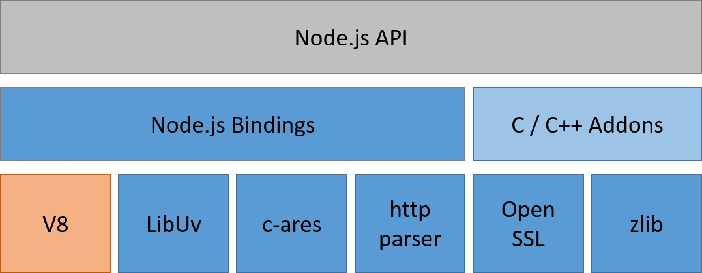
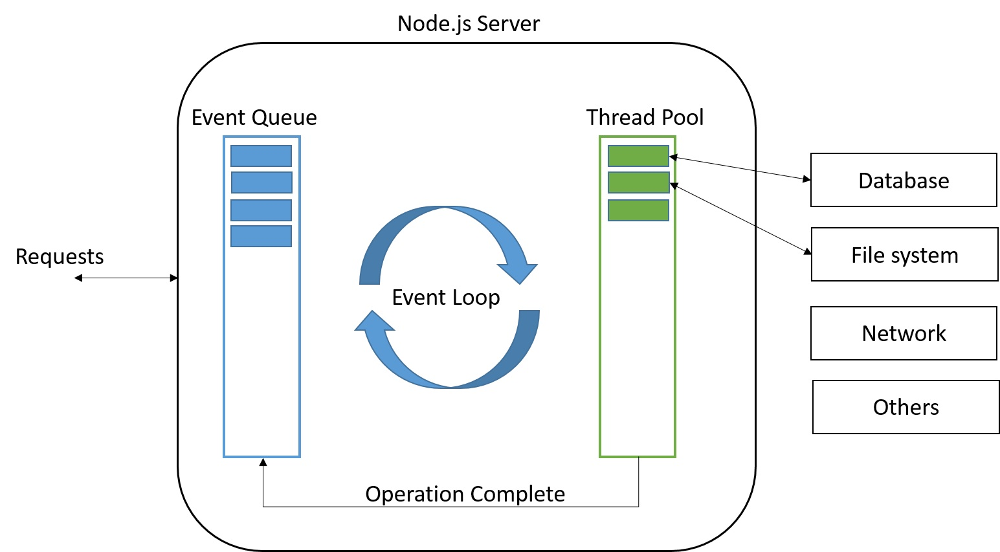

Created by Abdel Raoof Olakara
Node.js is a JavaScript runtime built on Chrome's V8 JavaScript engine. Node.js uses an event-driven, non-blocking I/O model that makes it lightweight and efficient.
Node.js is an open-source, cross-platform runtime environment for developing server-side web applications.
Node.js is an open source, event-driven, cross-platform runtime environment for building server side and networking applications using JavaScript


Learn more...
- Learn All The Nodes
- NodeSchool.io